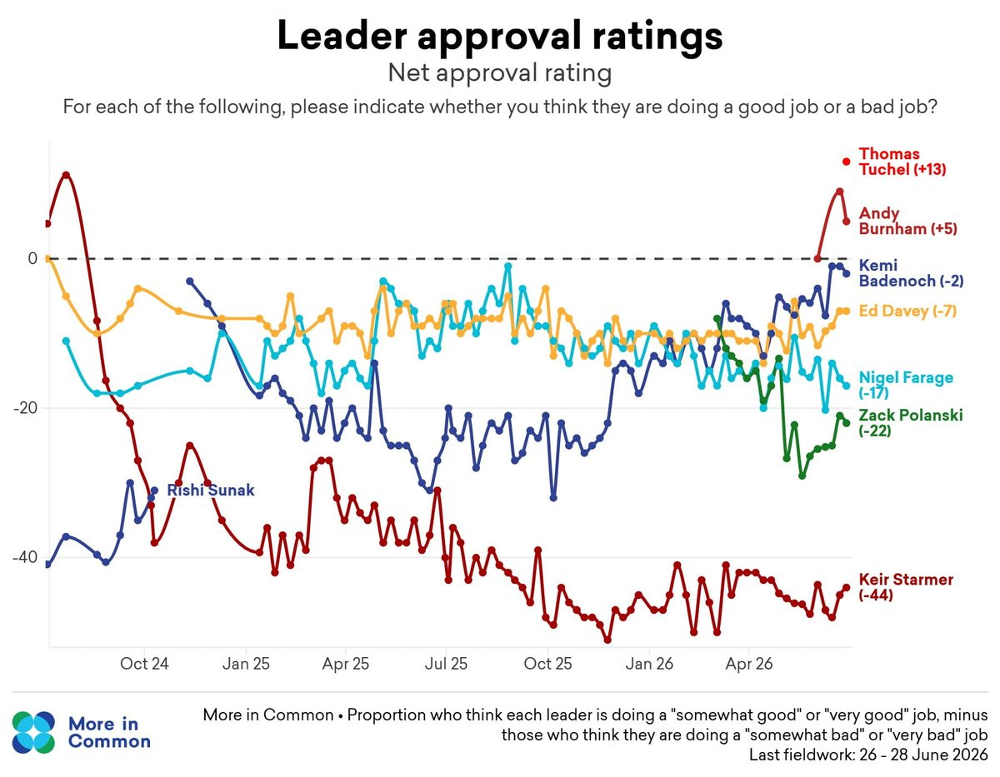
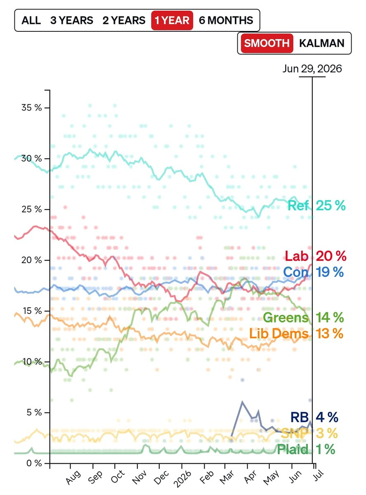

然而此時Polanski和他的Green正在落後labour與Burnham越來越多
@ZackPolanski 你覺得人家工黨會需要你這種跳樑小丑的合作嗎？😹

@ZackPolanski 你覺得人家工黨會需要你這種跳樑小丑的合作嗎？😹


🚨BREAKING | Zack Polanski says Greens will NOT work with Labour if Burnham continues to support Israel
Polanski said the genocide in Gaza is a "red line", and that any co-operation with Burnham would be impossible unless he admits Israel is committing genocide
(Via @Guardian) https://t.co/CpxJiGJ5Ps
Polanski said the genocide in Gaza is a "red line", and that any co-operation with Burnham would be impossible unless he admits Israel is committing genocide
(Via @Guardian) https://t.co/CpxJiGJ5Ps